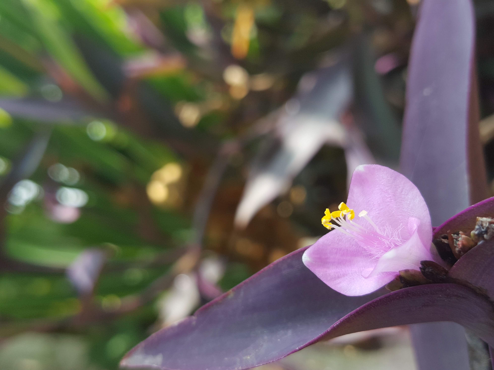
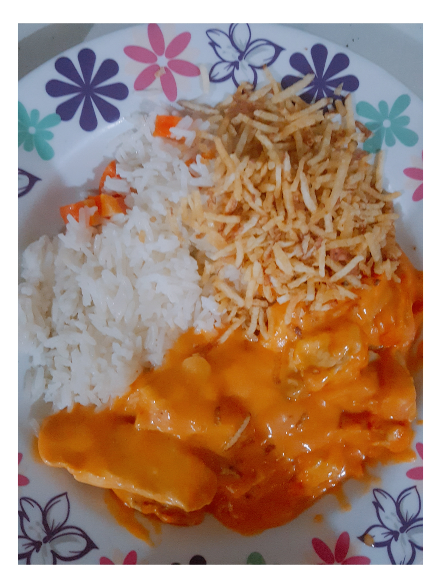

카페 소개

영업 시간 : 오전 9시 ~ 밤 10시
휴무 : 매주 수요일
(수요일이 공휴일일 경우 수요일 영업, 다음날 휴무)
오시는 길

서귀포시 안덕면 사계리 oooo-ooo
제주 올레 10코스 산방산 근처
이 달의 추천
- 1인분 기준으로 서버에 각얼음 5조각(한조각의 20cc) 넣고 추출을 시작한다
- 평상시 보다 원두의 양은 2배 정도 (20g)와 추출액은 얼음 포함하여 200cc까지 내린다
- 아이스 잔에 얼음 6~7개 섞어서 시원하게 마신다